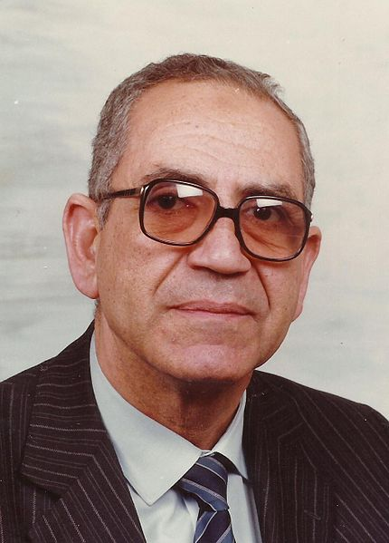
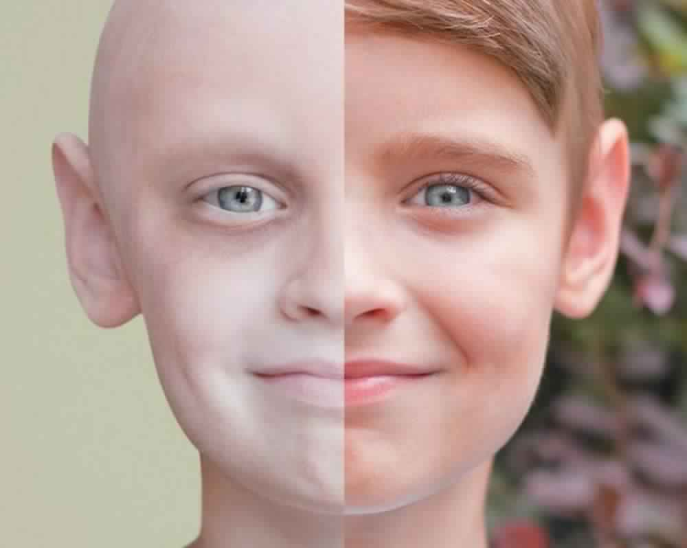

FCIH Hospital
Your Health Is Our Proiority
Professor Ahmed Sami Khalifa(14 November 1933 – 14 August 2015), Professor of Pediatrics, Ain Shams University


was an Egyptian pediatric hematologist/oncologist. He established the specialty of Pediatric Hematology/Oncology at Ain Shams University. He treated thousands of children with thalassemia, leukemia and other hematologic and ontological diseases all over Egypt. He taught hundreds of pediatricians and clinical pathologists all over Egypt at Ain Shams University, Cairo University and other universities Shams University, Cairo University and other universities
He received a Bachelor of Medicine and Surgery in (1957) from Cairo University, followed by a Diploma in Pediatrics (1959), a diploma in Internal Medicine (1960), a MD in Pediatrics (1961), and a Diploma in Physiology and Biochemistry (1964), all from Cairo University. He was certified by the American Board of Pediatrics in 1974.[citation needed][13]
doctor privilege from 01/03/1957 to 28/02/1958 - Cairo University Hospitals.
resident doctor from 10/04/1958 to 04/09/1960 - Children's Hospital and the paralysis Institute of Cairo University.
A. Lecturer of pediatrics from 18/08/1960 to 07/19/1964 - Department of Pediatrics - Faculty of Medicine - Ain Shams University.
Lecturer of pediatrics from 19/07/1964 until 10/21/1969 Department of Pediatrics - Faculty of Medicine - Ain Shams University.
Associate professor of pediatrics from 10/21/1969 until 10/25/1974 Department of Pediatrics - Faculty of Medicine - Ain Shams University.
Professor of pediatrics from 10/25/1974.
Head of the Department of Pediatrics from 01/08/1991 until 31/07/1994.
Professor Emeritus of Pediatrics from 08/01/1994 until 14/08/2015.
Created the pediatric Clinic Hematology and Oncology, Department of Pediatrics - Faculty of Medicine - Ain Shams University in December 1974, after his return from the United States as a therapeutic progress of the Egyptian society and friendly countries and education for physicians in diagnosis and treatment.
Visiting Professor at the University of Wayne, Michigan - United States of America.
External examiner at the Faculty of Medicine Dubai, United Arab Emirates and the Faculty of Medicine of the University of Jordan.
He was a member of the Standing Committee of Pediatrics in different periods.
was a member of the arbitration committee for the State Incentive Awards and discretion.
Supervised theses:
85 Master in pediatric hematology and oncology in children has vacationed.
62 M.D. thesis in pediatric hematology and oncology in children has vacationed.
Published 219 research in local and international journals.
Authored chapter on "Anemia in Mothers and Children in Developing Countries" in '' Maternal Child health around the World'' (1981) H.M Wallace and G.L. Ebrahim (editors) MacMillen Press London.
Authored chapter "Exchange Transfusion: Metabolic aspects biochemical changes" in '' Paediatrics and Blood Transfusion'' (1992) Smit sibinga, P.C.Das and J.O.Forfar (editors) Matinus Nijhoff. Publisher the Hague / Boston / London
Wrote Protocols of therapy for oncological diseases in Pediatrics (2012)
1-Egyptian Society of Pediatrics.
2-Egyptian Medical Association.
3-Egyptian Society of Hematology.[4]
4-Clinical Society of Ain Shams.
5-Egyptian Oncology Group in children.[14]
6-The Egyptian Cancer Society.
7-Ain Shams Society of Medicine and the care of children.
8-International Society of Hematology ISH.[15]
9-International Society of Pediatric Oncology
10-American Society of Hematology (ASH).[16]
11-European Haematology Association (EHA).[17]
Editor-in-Chief of the Egyptian children